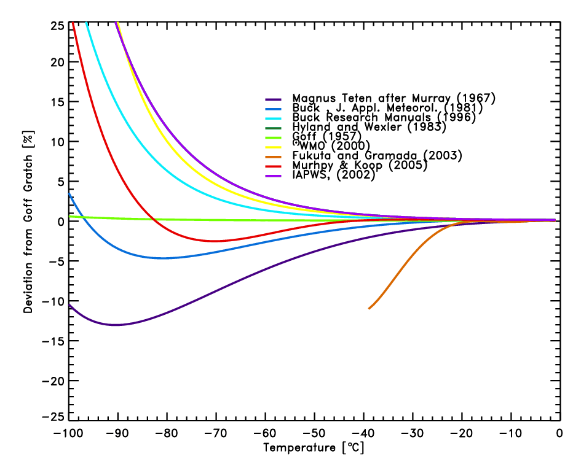
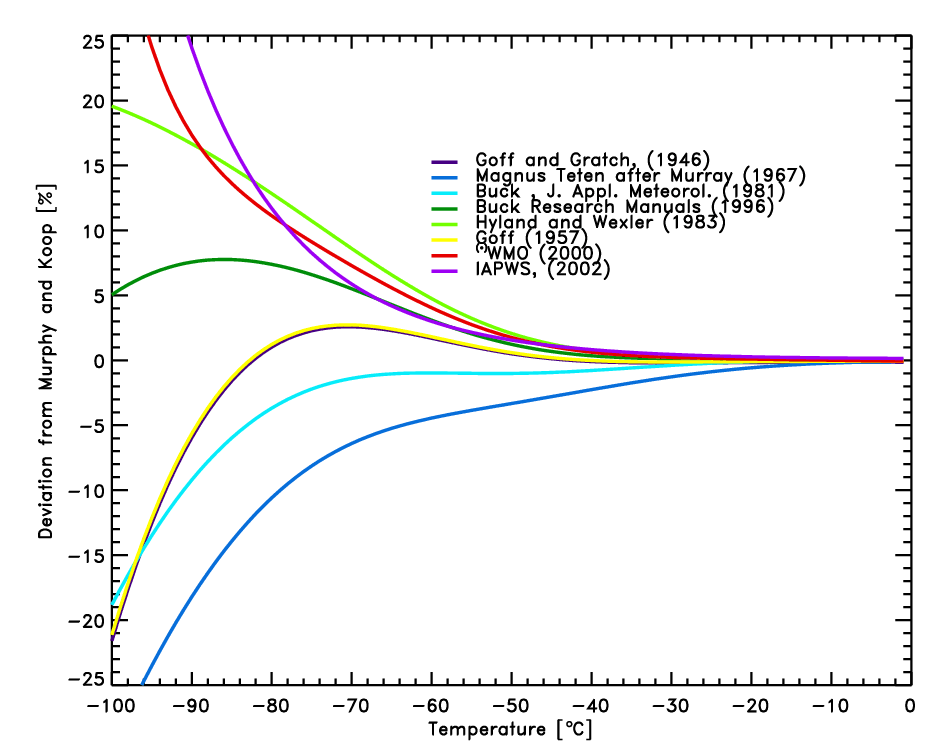
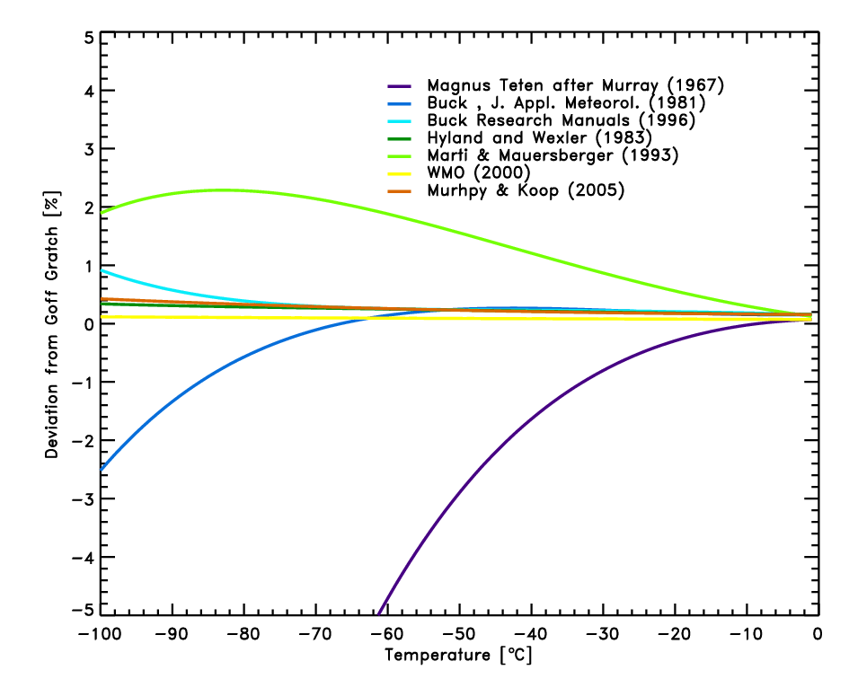

Saturation
vapor pressure formulations
Holger
Vˆmel
CIRES, University of Colorado,
Boulder
There is a large number of saturation vapor
pressure equations used to calculate the pressure of water vapor over a
surface of liquid water or ice. This is a brief overview of the most important
equations used. Several useful reviews of the existing vapor pressure curves
are listed in the references. Please note the updated discussion of the
WMO formulation.
1) Vapor Pressure over liquid water below
0∞C
Goff Gratch equation
(Smithsonian Tables,
1984, after Goff and Gratch, 1946):
Log10 pw
= -7.90298 (373.16/T-1)
[1]
+ 5.02808 Log10(373.16/T)
- 1.3816 10-7 (1011.344 (1-T/373.16)
-1)
+ 8.1328 10-3 (10-3.49149 (373.16/T-1)
-1)
+ Log10(1013.246)
with T in [K] and pw
in [hPa]
WMO
(Goff, 1957):
Log10 pw
= 10.79574 (1-273.16/T)
[2]
- 5.02800 Log10(T/273.16)
+ 1.50475 10-4 (1 - 10(-8.2969*(T/273.16-1)))
+ 0.42873 10-3 (10(+4.76955*(1-273.16/T)) -
1)
+ 0.78614
with T in [K] and pw
in [hPa]
(Note: WMO based its recommendation on
a paper by Goff (1957), which is shown here. The recommendation published
by WMO (1988) has several typographical errors and cannot be used. A corrigendum
(WMO, 2000) shows the term +0.42873 10-3 (10(-4.76955*(1-273.16/T))
-
1) in the fourth line compared to the original publication by Goff (1957).
Note the different sign of the exponent. The earlier 1984 edition shows
the correct formula.)
Hyland and Wexler
(Hyland and Wexler, 1983):
Log pw = -0.58002206
104 / T
[3]
+ 0.13914993 101
- 0.48640239 10-1 T
+ 0.41764768 10-4 T2
- 0.14452093 10-7 T3
+ 0.65459673 101 Log(T)
with T in [K] and pw
in [Pa]
Buck
(Buck Research Manual
(1996); updated equation from Buck, A. L., New equations for computing
vapor pressure and enhancement factor, J. Appl. Meteorol., 20, 1527-1532,
1981)
pw
= 6.1121 e(18.678 - t / 234.5) t / (257.14 + t)
[1996]
[4]
pw
= 6.1121 e17.502 t / (240.97 + t)
[1981]
[5]
with t in [∞C] and pw
in [hPa]
Sonntag
(Sonntag, 1994)
Log pw = -6096.9385
/ T
[6]
+ 16.635794
- 2.711193 10-2 * T
+ 1.673952 10-5 * T2
+ 2.433502 * Log(T)
with T in [K] and pw
in [hPa]
Magnus Teten
(Murray, 1967)
Log10 pw
= 7.5 t / (t+237.3)
+
0.7858
[7]
with t in [∞C] and pw
in [hPa]
Bolton
(Bolton, 1980)
pw
= 6.112 e17.67 * t / (t+243.5)
[8]
with t in [∞C] and pw
in [hPa]
Murphy and Koop
(Murphy and Koop, 2005)
International Association for the Properties
of Water and Steam (IAPWS) Formulation 1995
(Wagner and Prufl,
2002)
At low temperatures most of these are based
on theoretical studies and only a small number are based on actual measurements
of the vapor pressure. The Goff Gratch equation [1] for the vapor pressure
over liquid water covers a region of -50∞C to 102∞C [Gibbins 1990].
This work is generally considered the reference equation but other equations
are in use in the meteorological community [Elliott and Gaffen, 1993].
There is a very limited number of measurements of the vapor pressure of
water over supercooled liquid water at temperatures below ∞C. Detwiler
[1983] claims some indirect evidence to support the extrapolation of the
Goff-Gratch equation down to temperatures of -60∞C. However, this currently
remains an open issue.
The Hyland and Wexler formulation is used
by Vaisala and is very similar to the formula by Sonntag (6). The Magnus
Teten formulation [7] is widely used in Meteorology and appeals for its
simplicity.
The comparison for the liquid saturation
vapor pressure equations [2]-[8] with the Goff-Gratch equation [1] in figure
1, shows that uncertainties at low temperatures become increasingly large
and reach the measurement uncertainty claimed by some RH sensors. At -60∞C
the deviations range from -6% to +3% and at -70∞C the deviations range
from -9% to +6%. For RH values reported in the low and mid troposphere
the influence of the saturation vapor pressure formula used is small and
only significant for climatological studies [Elliott and Gaffen 1993].
The WMO recommended formula is a derivative
of the Goff-Gratch equation, originally published by Goff (1957). The differences
between Goff (1957) and Goff-Gratch (1946) are less than 1% over the entire
temperature range. The formulation published by WMO (1988) cannot be used
due to several typographical errors. The corrected formulation WMO (2000)
still differs in the sign of one exponent compared to Goff (1957). This
incorrect formulation is in closer agreement with the Hyland and Wexler
formulation; however, it is to be assumed that Goff (1957) was to be recommended.
The most recent review of vapor pressures
of ice and supercooled water by Murphy and Kopp (2005) provide a formulation
[9] based on recent data on the molar heat capacity of supercooled water.
The comparison of the the vapor pressure equations [1] - [8] with the formulation
by Murphy and Koop [9] is shown in figure 2.
The study by Fukuta and Gramada [2003]
shows direct measurements of the vapor pressure over liquid water down
to -38∞C. Their result indicates that at the lowest temperatures the
measured vapor pressure may be as much as 10% lower than the value given
by the Smithsonian Tables [1], and as shown in figure 1 lower as any other
vapor pressure formulation. However, these data are in conflict with measured
molar heat capacity data (Muprhy and Koop, 2005), which have been measured
both for bulk as for small water droplets.
Like most other formulations, the IAPWS
formulation 1995 (Wagner and Prufl, 2002) are valid only above the
triple point. The IAWPS formulation 1995 (Wagner and Prufl, 2002)
is valid in the temperature range 273.16 K < T < 647.096 K.
It is important to note that in the upper
troposphere, water vapor measurements reported in the WMO convention as
relative humidity with respect to liquid water depend critically on the
saturation vapor pressure equation that was used to calculate the RH value.

Figure 1: Comparison of equations [2]-[10]
with the Goff Gratch equation [1] for the saturation pressure of water
vapor over liquid water. The measurements by Fukuta et al. [2003] are shown
as well.
(*)WMO (2000) is also shown.
This is based on Goff (1957) with the different sign of one exponent, likely
due to a typographical error.

Figure 2: Comparison of equations [1]-[8],
[10] with the Murphy Koop equation [9] for the saturation pressure of water
vapor over liquid water.
(*)WMO (2000) is also shown.
This is based on Goff (1957) with the different sign of one exponent, likely
due to a typographical error.
2) Vapor Pressure over ice
Goff Gratch equation
(Smithsonian Tables,
1984):
Log10 pi
= -9.09718 (273.16/T
-
1)
[11]
- 3.56654 Log10(273.16/ T)
+ 0.876793 (1 - T/ 273.16)
+ Log10(6.1071)
with T in [K] and pi
in [hPa]
Hyland and Wexler
(Hyland and Wexler, 1983.):
Log pi = -0.56745359
104 / T
[12]
+ 0.63925247 101
- 0.96778430 10-2 T
+ 0.62215701 10-6 T2
+ 0.20747825 10-8 T3
- 0.94840240 10-12 T4
+ 0.41635019 101 Log(T)
with T in [K] and pi
in [Pa]
Magnus Teten
(Murray, 1967)
Log10 pi
= 9.5 t / (t+265.5)
+
0.7858
[13]
with t in [∞C] and pi
in [hPa]
Buck
(Buck Research Manual,
1996)
pi
= 6.1115 e(23.036 - t / 333.7) t / (279.82 + t)
[1996]
[14]
pi
= 6.1115 e22.452 t / (272.55+t)
[1981]
[15]
with t in [∞C] and pi
in [hPa]
Marti Mauersberger
(Marti and Mauersberger,
1993)
Log10 pi
= -2663.5 / T
+
12.537
[16]
with T in [K] and pi
in [Pa]
Murphy and Koop
(Murphy and Koop, 2005)
Log pi = 9.550426
- 5723.265/T + 3.53068 Log(T) - 0.00728332 T
[17]
with T in [K] and pi
in [Pa]
The Goff Gratch equation [11] for the vapor
pressure over ice cover a region of -100∞C to 0∞C. It is generally
considered the reference equation; however, other equations have also been
widely used. The equations discussed here are mostly of interest for frost-point
measurements using chilled mirror hygrometers, since these instruments
directly measure the temperature at which a frost layer and the overlying
vapor are in equilibrium. In meteorological practice, relative humidity
is given over liquid water (see section 1) and care needs to be taken to
consider this difference.
Buck Research, which manufactures frost-point
hygrometers, uses the Buck formulations in their instruments. These formulations
include an enhancement factor, which corrects for the differences between
pure vapor and moist air. This enhancement factor is a weak function of
temperature and pressure and corrects about 0.5% at sea level. For the
current discussion it has been omitted.
The Marti Mauersberger equation is the
only equation based on direct measurements of the vapor pressure down to
temperatures of 170 K.
The comparison of equations 12-17 with
the Goff Gratch equation (figure 3) shows, that with the exception of the
Magnus Teten formula, the deviations in the typical meteorological range
of -100∞C to 0∞C are less than 2.5%, and smaller than typical instrumental
errors of frost-point hygrometers of 5-10%.
Not shown is the WMO recommended equation
for vapor pressure over ice, since it is nearly identical with the Goff-Gratch
equation [11].

Figure 3: Comparison of equations [12]-[17]
with the Goff Gratch equation [11] for the saturation pressure of water
vapor over ice.
3) References
Bolton, D., The computation
of equivalent potential temperature, Monthly Weather Review, 108, 1046-1053,
1980..
Buck, A. L., New equations
for computing vapor pressure and enhancement factor, J. Appl. Meteorol.,
20, 1527-1532, 1981.
Buck Research Manuals, 1996
Detwiler, A., Extrapolation
of the Goff-Gratch formula for vapor pressure over liquid water at temperatures
below 0∞C, J. Appl. Meteorol., 22, 503, 1983.
Elliott, W. P. and D. J.
Gaffen, On the utility of radiosonde humidity archives for climate studies,
Bull. Am. Meteorol. Soc., 72, 1507-1520, 1991.
Elliott, W. P. and D. J.
Gaffen, Effects of conversion algorithms on reported upper air dewpoint
depressions, Bull. Am. Meteorol. Soc., 74, 1323-1325, 1993.
Fukuta, N. and C. M. Gramada,
Vapor pressure measurement of supercooled water, J. Atmos. Sci., 60, 1871-1875,
2003.
Gibbins, C. J., A survey
and comparison of relationships for the determination of the saturation
vapour pressure over plane surfaces of pure water and of pure ice, Annales
Geophys., 8, 859-886, 1990.
Goff, J. A., and S. Gratch,
Low-pressure properties of water from -160 to 212 F, in Transactions of
the American society of heating and ventilating engineers, pp 95-122, presented
at the 52nd annual meeting of the American society of heating and ventilating
engineers, New York, 1946.
Goff, J. A. Saturation pressure
of water on the new Kelvin temperature scale, Transactions of the American
society of heating and ventilating engineers, pp 347-354, presented at
the semi-annual meeting of the American society of heating and ventilating
engineers, Murray Bay, Que. Canada, 1957.
Hyland, R. W. and A. Wexler,
Formulations for the Thermodynamic Properties of the saturated Phases of
H2O from 173.15K to 473.15K, ASHRAE Trans, 89(2A), 500-519, 1983.
Marti, J. and K Mauersberger,
A survey and new measurements of ice vapor pressure at temperatures between
170 and 250 K, GRL 20, 363-366, 1993
Murphy, D. M. and T. Koop,
Review of the vapour pressures of ice and supercooled water for atmospheric
applications, Quart. J. Royal Met. Soc, 131, 1539-1565, 2005.
Murray, F. W., On the computation
of saturation vapor pressure, J. Appl. Meteorol., 6, 203-204, 1967.
Smithsonian Met. Tables,
5th ed., pp. 350, 1984.
Sonntag, D., Advancements
in the field of hygrometry, Meteorol. Z., N. F., 3, 51-66, 1994.
Wagner W. and A. Prufl,
The IAPWS formulation 1995 for the thermodynamic properties of ordinary
water substance for general and scientific use, J. Phys. Chem. Ref. Data,
31, 387-535, 2002.
World Meteorological Organization,
General meteorological standards and recommended practices, Appendix A,
WMO Technical Regulations, WMO-No. 49, 1988.
World Meteorological Organization,
General meteorological standards and recommended practices, Appendix A,
WMO Technical Regulations, WMO-No. 49, corrigendum, August 2000.
IDL source
for all equations
27 November 2006
Holger.Voemel@Colorado.edu